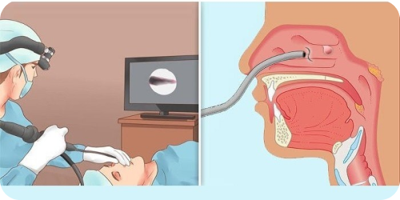

Діагностика
Скарги пацієнта
Фізичний огляд
Тести на ризик наявності СОАС
Інструментальна діагностика
Сліпендоскопія
Для комплексної оцінки ступеня ризику наявності апное уві сні на первинній консультації пацієнта зі скаргами на хропіння ми склали спеціальний опитувальник, що включає:
- оцінку провідних скарг, характерних для СОАС;
- наявність коморбідних станів можливих при СОАС;
- тести визначення ризику наявності СОАС;
- Шкала NoSAS
- Шкала STOP-BANG
- Берлінський опитувальник для виявлення апное сну
- Епвортська шкала сонливості
Для того щоб визначити важкість перебігу синдрому обструктивного апное та в подальшому запропонувати необхідне лікуваня ми проводимо інструментальну діагностику хвороби.
Інструментальна діагностика
Моніторингова нічна комп'ютерна пульсоксиметрія (МКП)
Встановлення датчика не потребує спеціальних знань, тому пацієнти зазвичай виконують це дослідження вдома: перед сном закріплюють пульсоксиметр на зап'ясті і надягають датчик на палець. По завершенню нічного сну вони знімають його і передають лікарю для аналізу даних. Проводиться дослідження в домашніх умовах
Кардіо-респіраторний моніторинг (КРМ)
Мінімально необхідне дослідження для встановлення клінічного діагнозу, але не дозволяє диференціювати апное центрального та обструктивного типів. Зазвичай проводиться в амбулаторних умовах поза сомнологічним центром.
Поліграфія (ПГ)
ПГ є одним із методів встановлення діагнозу СОАС та інших порушень сну. Дозволяє диференціювати апное обструктивного та центрального типів. Може проводитись у сомнологічному центрі під контролем медичного персоналу або в амбулаторних умовах.
При легкому та середньому ступені важкості СОАС може бути запропоноване хірургічне лікування. Для визначення рівня нічної обструкції верхніх дихальних шляхів та можливого хірургічного лікування, ми проводимо сліпендоскопію.
Сліпендоскопія
Медикаментозна ендоскопія сну (DISE - Drug-Induced Sleep Endoscopy). Діагностичний інструмент для оцінки верхніх дихальних шляхів у пацієнтів з хропінням і обструктивним апное уві сні в умовах медикаментозного сну що імітує природній сон.
Переваги сліпендоскопії:
- пряма візуалізація локалізації обструкції
- точне визначення структур, які є причиною хропіння та звуження верхніх дихальних шляхів, що дозволяє вибрати оптимальну тактику хірургічного втручання
- оцінка можливості застосування консервативних методів лікування
Після завершення діагностичного процесу наші фахівці нададуть вам зрозумілі та інформативні висновки, які допоможуть вам розуміти причини вашого стану та наші рекомендації щодо подальшого лікування та підтримки.